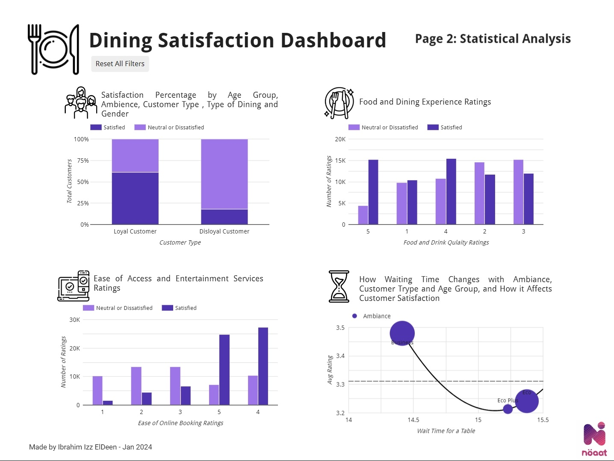
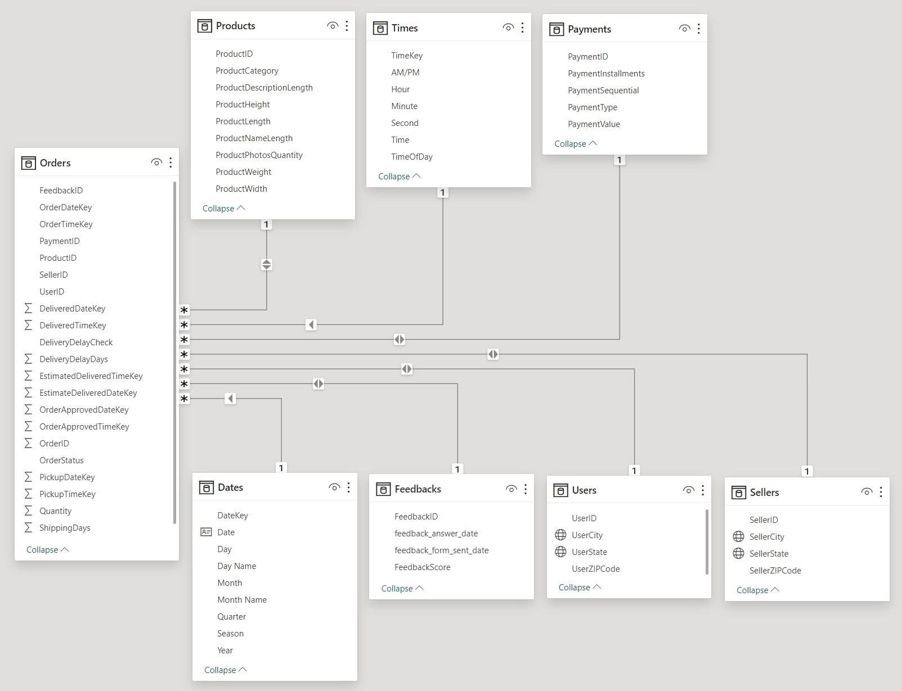
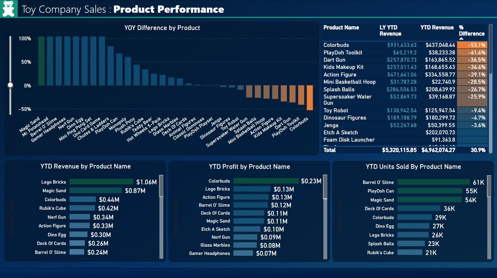
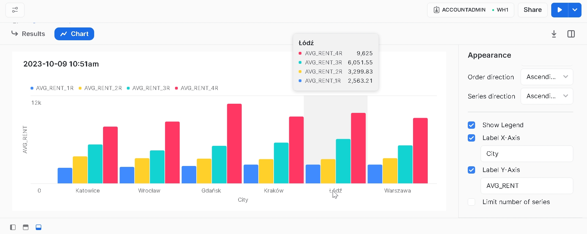
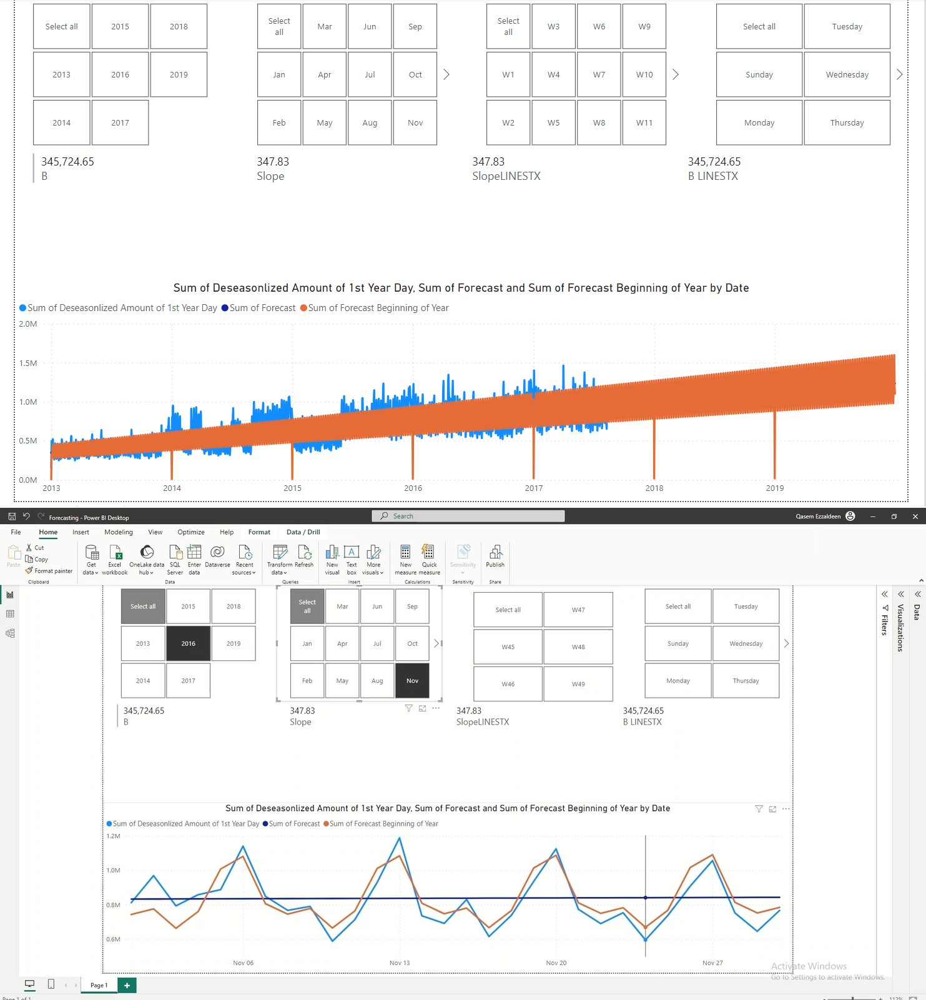

A descriptive and predictive analysis of dining satisfaction using Looker Studio and BigQuery ML. It evaluates various factors influencing dining satisfaction and predicts customer satisfaction based on their information and survey ratings.
Contains customer and dining information, as well as visual representation and scores (out of 5) of different survey metrics and their total average for the selected filters and ranges like:
Baggage Handling
Check-in Service
Cleanliness
WiFi Service
We see how changing customer information and the range of these scores affect the number of total satisfied and dissatisfied people...
Page 2: Statistical Analysis

Includes some charts breaking down each survey metric and customer information by satisfaction level...
A comprehensive Data Analytics project tailored for E-Commerce, everything from ETL to Data Modeling and Warehousing up to Power BI Dashboard and even SQL Queries to answer all business needs.
This project involves extracting data from CSV files, utilizing Excel (or Alteryx) for minimal transformations, transferring it to SQL Server for staging, and further refining it with Power Query transformations. Finally, we delve into SQL Server for data modeling and leverage Power BI for insightful analysis.
Data Modeling in SQL Server:
Delve into the intricacies of data modeling, where the structure of the data warehouse, including dimension and fact tables, is meticulously crafted for analytical purposes.

Power Query Transformations:
Witness the power of Power Query as it refines and transforms data within the SQL Server staging area, ensuring data quality and integrity before proceeding to the modeling phase.
SQL Analysis for Strategic Insights:
Experience the synergy of SQL Server and Power BI as we leverage queries to uncover valuable insights, enabling informed decision-making in the dynamic e-commerce landscape.
Power BI Dashboard:
Engaging and Dynamic Comprehensive Dashboard.
Project Highlights:
Efficient ETL Process: Alteryx facilitates a seamless transition from CSV to SQL Server, ensuring data integrity with minimal transformations.
Robust Power Query Transformations: The Power Query component enhances data quality during the staging process, preparing it for comprehensive analysis.
Scalable Data Modeling: The architecture is designed to handle growing datasets and evolving business requirements during the modeling phase.
Actionable Intelligence: The analysis phase, powered by SQL Server and visualized through Power BI, provides strategic insights to drive informed business decisions.
Toy Company
Sales Analysis (Power BI)

2023 Sales Performance Report
Product Performance Report
Store Performance Report
Toy Company Sales Analysis
2023 Sales Performance Report
Product Performance Report
Store Performance Report
Learned to Use Some Common DAX Functions to Measure:
Year-to-date revenue.
Year-over-year difference.
Progress towards given goal to reach by end of the year.
Total profits, units sold, cost and others all sliced by given products, stores, category, location or other filters.
Outstanding Visualizations.
practiced using maps, conditional filtering, matrices, data modeling and other Power BI features, and still some work to do on this huge project.
ADIDAS Sales Analysis (Excel)
Analyzing ADIDAS Sales Across USA Stores from January 2020 to December 2021
Adidas Sales Analysis
Analyzing ADIDAS Sales Across USA Stores from January 2020 to December 2021
ETL Done with Power Query
Analysis Done With Pivot Tables
Dashboard Design Done with Excel Tools
🔦 Insights
Which ProductsWhich Products Contributed More to Revenue?
Which States Should We Push More Products to?
What is The Peak Month in 2020 and 2021?
What is Our Top Region and Sales Channel?
Revenue Trend By Weekday.
Top Men Products VS Top Women Products.
⚖ KPIs
Total Revenue.
Ordered Quantity.
Number of Transactions.
Top 3 Men Products.
Top 3 Women Products.
🎚 Slicers
Year.
Month.
Product.
Sales Channel.
Otodom
Analytics (Snowflake SQL)

Answering Some Business Insights in SQL with Snowflake
otodom analytics
Answering Some Business Insights in SQL with Snowflake
🔦 Insights
What is the average rental price of 1 room, 2 room, 3 room and 4 room apartments in some of the major cities in
Poland? Arrange the result such that avg rent for each type of room is shown in separate column.
want to buy an apartment which is around 90-100 m2 and within a range of 800,000 to 1M, display the suburbs in Warsaw
where I can find such apartments?
What size of an apartment can I expect with a monthly rent of 3000 to 4000 PLN in different major cities of Poland?
What is the avg sale price for apartments within 50-70 m2 area in major cities of Poland?
Also learnt that you can instantly chart a SQL Query result! no need to export it to any extra visualization tool, but
rather you select your result table and click 'Chart' beside it and choose your graphing options. Simple, Effective and
Fast.
Time Series
Forecasting (Power BI)

Practising Power BI Time Sereis Forecasting, Using DAX to write Linear Regression Formulas from scratch, and then simply using LINESTX( ) Function to do it all for me without manual calulations.
Time-series forecasting (Power BI)
Practising Power BI Time Sereis Forecasting, Using DAX to write Linear Regression Formulas from scratch, and then simply using LINESTX( ) Function to do it all for me without manual calulations.
I learnt some new concepts like Decomposition, which is the trend profiliing of time sereis data, Deseasonalization, which is to normalize seasonal compnents and match the overall data trend, and how using LINESTX( ) outperforms automatic forecasting feature in Power BI.